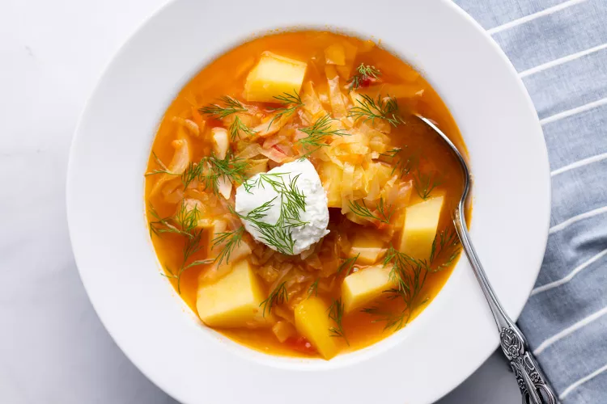

🥬 = Vegan Ingredients 🌾 = Contains Gluten🦐 = Contains Shellfish 🥜 = Contains Peanuts
Southern Fried Cabbage $8.99
- Southern style cabbage dish with crispy bacon.
-
Cabbage Mushroom Dumplings $10.00

- Asian quisine inspired shittake mushroom and cabbage wonton-style dumplings. 🥬
🌾
-
Cabbage and Shrimp Canh $13.99
- A Vietnamese cabbage, vegetable, and shrimp soup. 🦐
-
Sautéed Garlicky Cabbage $7.00

- Cabbage sautéed with garlic and various seasonings. 🥬
-
Okonomiyaki $8.00

- Savory Japanese cabbage pancakes. 🥬🌾
-
Cabbage Brats $9.99

- Brats wrapped in cabbage, served with a peanut sauce. 🥜
-
Kaalilaatikko $11.00

- Finnish cabbage casserole topped with lingonberries. 🌾
-
Shchi $10.99

- Shchi, a hearty cabbage soup with Russian origins.
-
Cabbage Cheeseburger $13.00

- A cheeseburger wrapped with cabbage.
-
Roasted Cabbage $7.99

- An entire head of cabbage, roasted perfectly. 🥬
-
Bacon Wrapped Cabbage $8.99

- Cabbage wedges, wrapped in bacon and pan fried.
-
Creamy Cabbage Coleslaw $7.00

- A creamy coleslaw with shredded red and green cabbage as well as carrots.
-
Bufallo Shrimp in Cabbage $12.99

- Buffalo sauce covered poached shrimp, cradled in leaves of cabbage.🦐